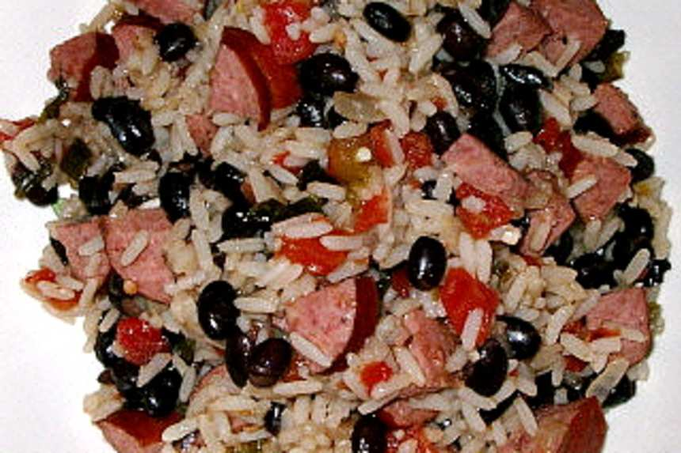

Pepes Home Made Rice and Beans

This is a home made rice and beans recipe that ol' Pepe has been making for a few years.
This recipe is pretty tasty and of course there's a thousand variations but Pepe likes his with black beans, diced tomatoes, and beef sausage. It
only takes about 20 minutes to cook the rice and once that's done just another 10 minutes to throw it all together.
Ingredients:
- One cup of white rice
- 2 cups of water
- Teaspoon of olive oil
- 1/2 teaspoon of chopped garlic
- 1/4 cup of chopped onion
- One 28 oz can of Rotel Original diced tomatoes and green chiles
- One 15.5 oz can of Goya black beans(Pepe has an affinty for Goya kek)
- 1 one lb package of beef sausage
Steps:
- Gather ingredients.
- Pour water into small saucepan with the olive oil.
- Add the onion and garlic
- Bring water to a boil then add the rice. Bring to boil again.
- Turn heat down to low, cover tightly, and cook for 20 minutes.
- Cut sausage in small pieces while wauting for rice to cook.
- Heat beans for 1 minute in microwave oven.
- When rice finishes cooking add the can of tomatoes, the beans, and the sausage and mix.
- Thats it! Eat and Enjoy!
Home